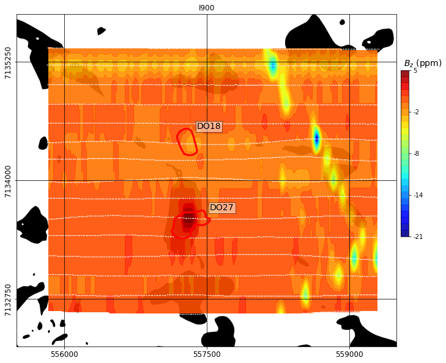
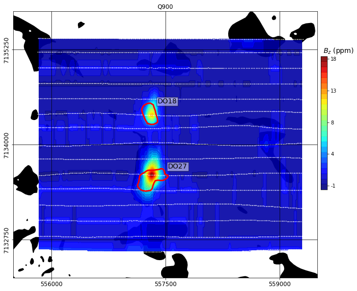

Data
This section reviews the data that was graciously provided by Peregrine Diamonds Ltd. We review the units and normalizations, as well as observations that can be made by simple visual inspection of the data. It is important to note that survey reports were missing for a few data sets. As a result, some of the technical information had to be inferred from surveys acquired during the same time period.
Gravity
Fig. 367 Observed ground gravity data. Observation locations are denoted by white dots.
Two ground gravity surveys were provided, which measured the vertical gravity field (\(g_z\)) in mGal. The surveys were initially not referenced to the same coordinate system and no correction had been done by the contractor to compensate for the different instrumental level. Leveling was done in post-processing by [JW04], and supplied to us as Bouguer corrected (2.67 g/cc) data.
Three main features are observed in the gravity data:
Low gravity anomalies over DO-27 and DO-18,
Low gravity anomaly connecting the two kimberlite pipes.
Initial interpretation of the gravity data supported the idea of both pipes being connected at depth.
Gravity Gradiometry
Fig. 368 Observed airborne gravity gradiometry data.
Airborne gravity gradiometry data were collected in 2001 using the Falcon system with the final product being the vertical component \(g_{zz}\) in Eotvos (\(10^{-9}\; s^{-2}\)). The survey line spacing was approximately 50 m. A terrain correction density of 2.67 g/cc and a 100-m wavelength cutoff filter were applied to the data by the contractor.
The main features observed in the gravity data are:
Negative anomalies over DO-27 and DO-18,
Negative anomaly connecting the two kimberlite pipes,
Positive high along the Mackenzie dyke,
Low to negative gravity gradients associated with the hydrography.
Magnetics
We reviewed the magnetic data acquired along side the DIGHEM, AeroTEM II and VTEM surveys. All three systems were equipped with a cesium vapour magnetometer, which recorded Total Field Intensity (TMI) magnetic data in nT as shown below. Differences in TMI levels can be attributed to changes in the inducing field and variable flight heights.
Two main features are observed in all three datasets:
A positive anomaly over DO-27 and DO-18,
A negative anomaly on the north-eastern flank of DO-27.
From the larger footprint of the DIGHEM survey, we can also identify two larger magnetic trends. The narrow magnetic anomaly strikes \(315^\circ\) N, found throughout the Lac de Gras region, corresponds to the Mackenzie dyke swarm [BLvB09]. A weaker but still distinguishable narrow anomaly appears to be striking at \(45^\circ\) N. This feature may be part of the MacKey dyke swarm.
System |
DIGHEM |
VTEM |
AeroTEM |
Number of data |
6274 |
26334 |
22561 |
Field strength (nT) |
59500 |
59580 |
59500 |
Inclination (\(^\circ\)) |
83.0 |
83.3 |
83.0 |
Declination (\(^\circ\)) |
21.0 |
19.5 |
20.0 |
Frequency-Domain EM
The DIGHEM system coil configuration allows for the collection of the vertical (\(B_z\)) and in-line (\(B_{xy}\)) components of the magnetic field in the frequency domain. A bucking coil was used to cancel the primary signal from the transmitter loop. The receiver records the in-phase and quadrature components of the secondary field in parts-per-million (ppm) of the primary field \(B_{P}\) such that:
\(B_{ppm} = B / B_{P} * 10^6\)
FEM data are often interpreted by simple visual inspection of each frequency. From the skin depth approximation, the highest frequencies can be used to delineate near-surface conductors whereas deeper structures can potentially be detected by the lower frequencies. From the data provided, the quadrature data of the in-line data (\(B_{xy}\)) were missing. Hence only the vertical co-planar data were used in this study.
|

|
|

|
We highlight the following features:
As observed on the quadrature component of the 900, 7200 and 56 kHz, a large EM signal is observed at the location of both DO-18 and DO-27.
The 56 kHz quadrature data displays EM highs correlated with the hydrography, agreeing with a shallow response from the lake bottom sediments and glacial till layer.
Two elongated and narrow negative anomalies appears in the in-phase maps of the 900 Hz and 7,200 Hz. These features are associated with intrusive dyke swarms known to be strong magnetic susceptibility anomalies.
Time-Domain EM

We present the time channels collected by the NanoTEM (1993), AeroTEM (2003) and VTEM (2004) systems. All three systems record the time-varying vertical component of the magnetic field \(\frac{\partial B_z}{\partial t}\) in (nT/s). Data quality, and the time range for which data are sampled vary across EM systems, hence the EM data sets should show some differences. Morevoer, the NanoTEM is a ground loop survey, whereas both the AeroTEM and VTEM are airborne surveys. In general, we observe the following features:
Both systems record a positive anomaly over the southern lobe of DO-27, which later goes negative.
Negative data are observed on all time channels over DO-18.
Relative noise level gets progressively larger at later times.
From the skin depth approximation, we would expect that the later time data could be used to illuminate deep conductors. In this case however, the late time channels recorded over the pipes are all negative, which may indicate the presence of chargeable materials [Wei82]. Chargeable materials are frequently responsible for generating induced polarization (IP) responses in time-domain EM data.
Induced Polarization Signature
The negative \(\frac{\partial B_z}{\partial t}\) data recorded by both time-domain systems may be indicative of IP responses resulting from chargeable material. However, from a kimberlite exploration perspective, the existence of an IP signal is not necessarily significant. Ice and near surface clays are known to be chargeable and are often considered to be EM noise. The challenge here is to differentiate between noise and any usable IP signal. If successful, we could characterize the kimberlites based on their chargeability.
Fig. 369 IP soundings
Fig. 369 compares multiple soundings from the NanoTEM data set at locations directly above DO-18 and away from the pipe, which we refer to as background. Every sounding shows negative values at later time channels, but the decay rate of background stations is faster than those over DO-18. The IP signal in the background soundings is likely due to surface glacial sediments (including ice and clays).
Fig. 370 IP data map
The strong spatial correlation between the negative data and the location of the pipes suggests however that some IP signal may originate from the kimberlites themselves. We focus on the VTEM data set as it includes most of the important IP features observed at TKC, while showing less noise at later time channels than other TEM data. From the coherent negative \(\frac{\partial B_z}{\partial t}\) data, we identify four anomalies of interest:
A1: Near DO-18,
A2: Between DO-18 and DO-27,
A3: On the north eastern edge of DO-27,
A4: On the southern portion of DO-27. The A4 anomaly appears to be different as the data goes from positive to negative.